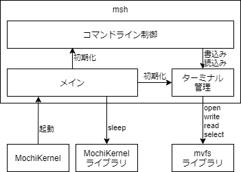

モジュール構成
mshのモジュール構成を以下に示す。

| # | モジュール名 | 動作 スレッド |
概要 | |
| 和名 | 英名 | |||
| 1 | メイン | Main | メイン スレッド |
起動時に各モジュールを初期化する。 |
| 2 | ターミナル 管理 |
Termmng | メイン スレッド |
ターミナルファイルをopenしてターミナルファイルを管理し、コマンドライン制御モジュールに読み書き機能を提供する。 |
| 3 | コマンドライン 制御 |
Clctrl | メイン スレッド |
プロンプトを出力し、コマンドライン編集を受け付ける。 |